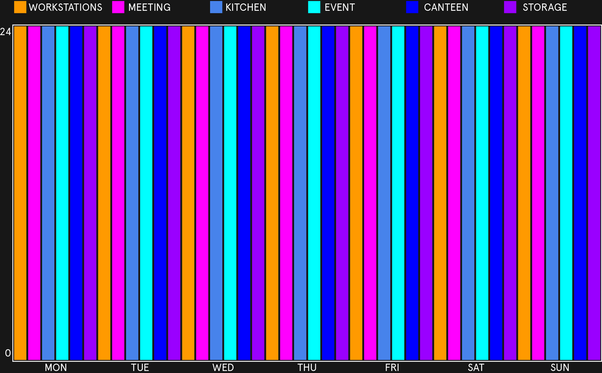
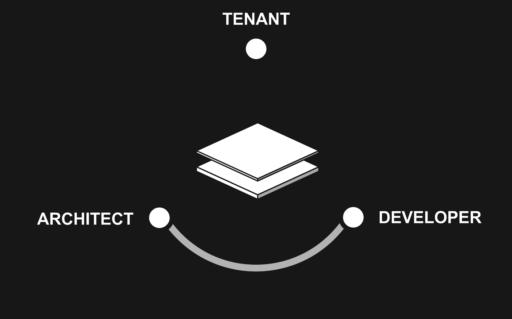
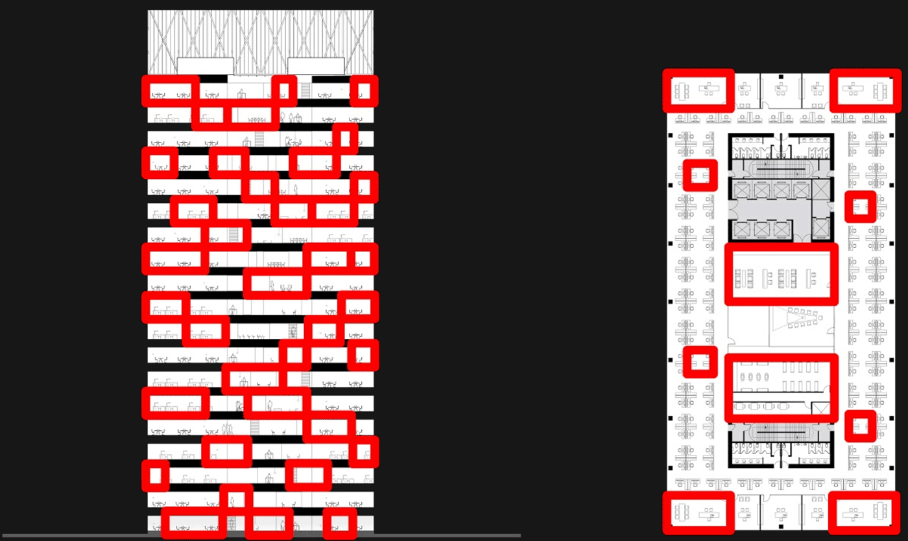
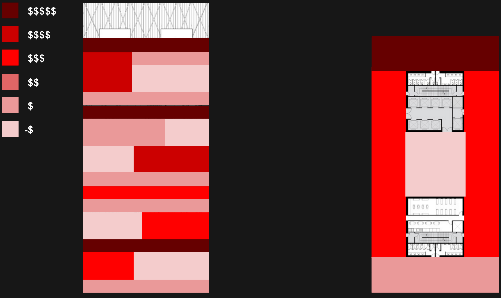
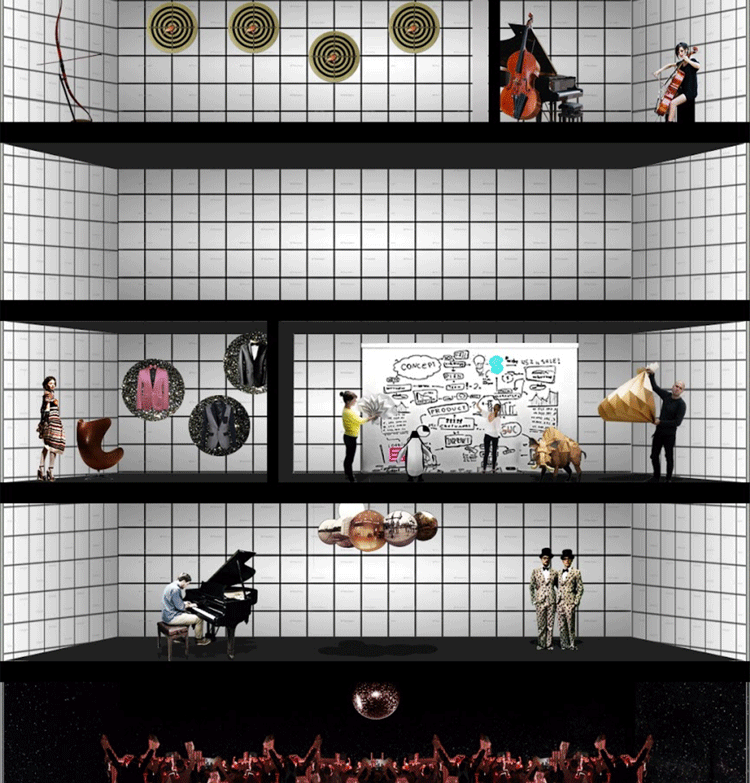
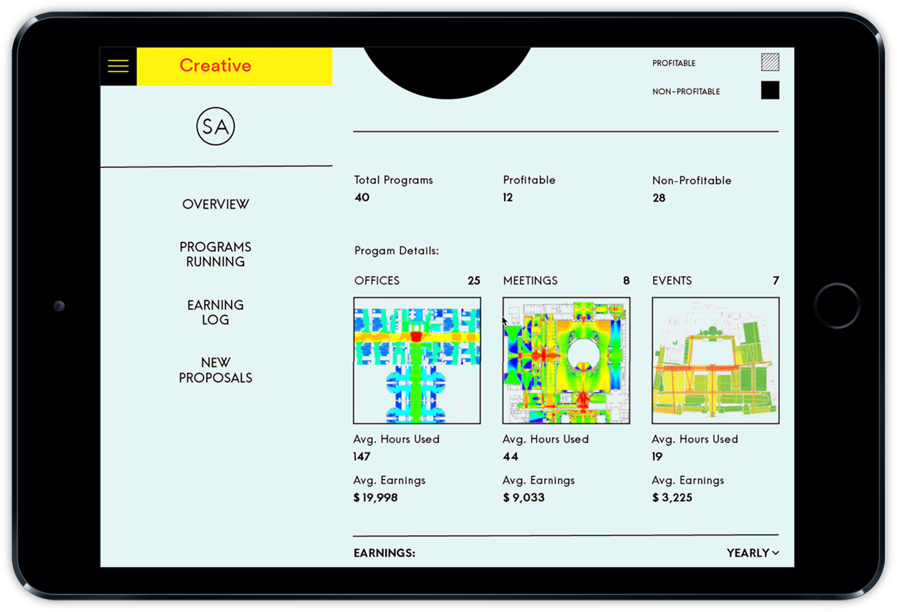

The industry of Commercial Real Estate – including development, management and client relationship models – have not changed much since the 19th century. Focused primarily on minimizing risks, and resorting to proven tools to leverage value of properties, traditional developers have long been reluctant to take more proactive approach. In the face of disruption, however, taking no risks is becoming the biggest risk of all.
This project, conducted for Cushman & Wakefield in Moscow, challenges the status quo of the industry to redefine user-developer relationship model and increase the value of property in a more appropriate way for the networked age.
__
At a Glance
Challenge
In early 2016, in the midst of political and economical unrest, commercial real estate sector in Russia is facing challenging times. The overall vacancy rate in Moscow is high at 19.1%, with some of the higher end properties vacant up to 49%.
While SMB and entrepreneurs are growing in numbers, most potential tenants, are reluctant to commit for traditional long-term lease contracts. On other hand, developers, unable to respond to the changing demands of the market, are left in suspension, with exposition periods reaching 3 years and more for some of the properties.
Waiting through might be a decent strategy if the old times are to be back soon. But what if it was a smarter way? Cushman&Wakefield asked us to help.
Solution
At its core, our approach is based on the belief that it is more productive to embrace the change, rather than trying to resist it. We outline the framework for adaptive property management model that capitalizes on the seemingly negative tendencies, turning them into competitive advantages.
Using Ducat Place III in Moscow as a case study, we demonstrate how tapping into the potential of technology and changing the angle we look at the leasing and contractual systems makes possible for series of opportunities to be unlocked. These constitute attracting new tenants by better responding to their needs, increasing operating income by utilizing capacity of building more efficiently, and aligning interests of the main stakeholders by altering incentive models.
Result
In the process of business model simulation, we have seen operating income of Ducat Place III
increase up to 30%, owing to optimized use of resources, and business model innovation. As the operating income is one of the key factors that determine value of property, increase of the monthly bottom line directly impacts the market value of the property.
The project was well received at Cushman&Wakefield, and has since become the starting point for several initiatives both internally and outside the organization.
Explore the project in more details below.
Process
Having started upstream the brief, we had to identify the scope, and frame of the challenge ourselves. To do that we looked extensively at the industry from different vantage points in order to map it thoroughly, identify interdependencies and understand the best point to channel our efforts.
Throughout the six weeks, we conducted the research of relevant macro-trends affecting the industry from within, as well as series of interviews and workshops with the key stakeholders including developers, architects, brokers, tenants and end users in order to better understand the business processes, constraints, possibilities, motivations, beliefs and goals of each group involved.
Finally, having mapped the insights and identified the pain-points, we investigated current value propositions and parts where it can be improved in the light of new technological possibilities and interests of the stakeholders.

What We've done at this stage
- Researching and mapping future work and workplace trends;
- Skype-interviewing world-known experts sociologists, philosophers and architects;
- Mapping internal structure of C&W, real estate consultancy;
- Mapping project cycles of development process;
- Interviewing local developers, real-estate brokers;
- Interviewing local architects and designers;
- Interviewing tenants and users of a selected business center;
- Workshop with stakeholders to identify friction points in the current process;
- Researching and mapping latest tech in #office, #community_management, #teamwork, #collaboration, #sharing
Insights and Acknowledgements
Having conducted and mapped the research, we have identified commonalities, and clustered the insights—both forces affecting the industry of real estate in general, as well as workspace environment in particular—into groups.
To explore each area in more detail, click on the blocks below.
Political and Economical Uncertainty
In 2013 Russia was named the next hot Real Estate market in the world by Forbes Magazine. Few years later, (partially as a result of events no one could predict), it’s battling the recession, with real estate market hitting historical lows. Meanwhile, government is actively encouraging industrial production, which directly affects the situation in real estate market. Examples like this are plenty, which one more time suggest that it is impossible to predict the future, based on the historical data. Explore more.
Technological Disruption
Across the board of industries we see established companies being disrupted by the more agile and daring ones, enabled by technology. There’s a common thread to be seen within disruptors' camp: they prefer iterative and agile processes to linear ones, they lean towards networked ways to generate value as opposed to industrial pipe production, finally, they define themselves by value they deliver to customer, rather than by product they produce. Which camp do commercial real estate developers fall into? Explore more.
Changing Role of Office
Being able to work from virtually any part of the world, we haven’t abandoned our offices however, as a lot of experts have predicted some time ago. Contrary to that, we see an advent of collaboration and communal working. And while office in not going away anytime soon, the workspace is clearly changing. Instead of being a mere workstation, office is becoming a stage for social interaction and collaboration. How the workspace we know today will be shaped by the values and preferences of millennials taking over the workspace?
19TH CENTURY MODEL FACING 21st CENTURY REALITIES
Except for few notable examples, commercial real estate industry, largely due to market forces, legal, financing, contractual particularities and prevailing ethos is prioritizing a lot of factors, (in its business), but the end user needs. In its focus on the product, and the process of production, it mostly resembles the old industrial model of the 19th century, where value is produced upstream and consumed obediently downstream (the pipe). As we transition towards the new economy, such a mindset inevitably becomes an attribute of the past.
trying to predict the future
As the world becomes more volatile, uncertain, complex and ambiguous it’s increasingly hard to predict the future. Nevertheless, each real estate development in an exercise in doing so, as by the time building is complete, many years have to pass. Trying to stay on top of the game, developers are relying on financial and trend predictions to anticipate what would market situation and user needs be by the time the construction is complete. Such approach is based on the assumption, that it’s possible to design ideal space for average behavior, and results in inefficient use of space at best.
Stakeholders' values are missaligned
After having conducted interviews with the key stakeholders, (including developers, architects, tenants and users of spaces), and mapped their goals, beliefs, incentives and risks, we realized that interests and values of all the parties are largely misaligned. Partially due to distorted power dynamics, and complicated value creation and delivery scheme, upstream the process reminds different parties pulling in opposite directions, while the end user is mostly left out of equation.
friction points within the system
Having taken user centric approach, we identified friction points across the current use cycle for each stakeholder to better understand what can be improved and where. As a result, we realized -ppl don’t know what they want - architects are not incentivized enough
unrealized Opportunities
As a result of this approach we have inefficient buildings.- lack of efficiency in time (timescraper)- lack of efficiency in space (waste of common areas)- lack of flexibility
Hardware Bottleneck
After having conducted interviews with the key stakeholders, (including developers, architects, tenants and users of spaces), and mapped their goals, beliefs, incentives and risks, we realized that interests and values of all the parties are largely misaligned. Partially due to distorted power dynamics, and complicated value creation and delivery scheme, upstream the process reminds different parties pulling in opposite directions, while the end user is mostly left out of equation.
As a result, we ended up with the array of different factors and interdependencies related to our area of inquiry. Some we could affect directly, while other were completely out of anyone's control, which meant we had to embrace it and adapt.
The biggest challenge, however—acknowledging that we are unable to change all the system at once—was to identify where to direct our efforts towards. In other words, which aspect, if changed, would result in the most meaningful change and would unlock opportunities to affect other parts of the ecosystem.

How might we align interests of the stakeholders, and increase value for all the parties involved, while using single ratchet to unlock the change?
Approach
First, recognizing that we live in uncertain times, instead of trying to anticipate the trends and predict the future, we propose a responsive and adaptive framework, that is aimed at establishing alignment between—and maximizing value for—the key stakeholders. Instead of predicting upfront what value should be delivered in a top-down fashion, our solution reserves a room for inputs from the stakeholders, thus ensuring the longer-term viability of the property.
Secondly, recognizing that systemic problems can’t be solved through the creation of physical artifacts only, we deliberately shift our focus to the software—as opposed to hardware—parts of the problem.
Careful to suggest that better architecture could be the solution, we focus on what intangible factors—including policy, lease terms, incentive models—should be addressed in order to initiate meaningful change and to establish more fertile ground for future evolution that would enable to develop and run physical buildings more like digital services.
Solution
First, unlock the time
Instead of measuring the lease time in years, we propose to measure it hours. Most fundamentally, it unlocks awareness. End users are now able to see and measure what and how they use. Pay for what they use. And become deliberate about it.
This allows to think of space as a service.
Customized service package
Now, instead of paying for all of the office areas for 24 hours for 5 years upfront, tenants are able to customize their package on daily or weekly basis, choosing and paying only for what is needed. Being free to decide whether to pay less or more.
In other words, combining the package service-by-service, instead of all inclusive.
How does that impact the building?

Marketplace for services
Instead of monopolizing production of value and charging rent for it, building opens up for external producers to create value—in forms of content, events, services, spaces—best suited for its tenants.
Building becomes an infrastructure on top of which value can be created. Focusing its management efforts to orchestration of value creation, building provides produces with valuable analytics and tenant feedback for better decision making.
Being economically incentivized, producers—architects, designers, event organizers—analyze needs of tenants, and compete with each other in providing best possible value for users of the building.
Users in turn, choosing what spaces to use—while paying on hourly basis—enable healthy market conditions. This allows users to get access to better offerings and services without leaving the building, while managing spending. As a result of this process, building gradually transforms to reflect preferences of its inhabitants.
Finally, the building collects certain percentage from each transaction that occurs on the platform, much like digital services.
Profit sharing model between landlord and producers creates an incentive for the ones responsible for value creation to be continuously involved into the process and deliver the best.

So what has become possible?
Optimize the space
Enabling users to pay selectively for areas they use, allows for different spatial organization within the building: common ares—meeting rooms, lounges, canteens—can be clustered into special zones, separated from more traditional work areas. This has several advantages:
First, clustering allows to design truly splendid and stimulating shared areas. While, not having fragmented meeting rooms dispersed over each floor, allows to layout the spaces more efficiently.
Second, it alters user's relationship with the building. Office is no more secluded portion of the floor-plate, office is the building. It presents people with more choice of better quality spaces. Most importantly, however, it fosters interaction between the residents, as the shared spaces become meeting epicenters for employees of different companies, breaking existing silos.

Optimize the time
It's no secret that most office areas currently are heavily underutilized, being used for only fraction of 24 hours presented in the day.
Unlocking the time for users, also allows building managers to stack different uses in time. So that shared meeting areas, occupied during the day, can accommodate yoga session in the morning or training session or pop up exhibit at night.
Such approach allows to utilize given resources more effectively, while delivering higher value for residents, who get access for additional activities without having to leave the building.
Innovation
Having no fixed lease and charging for usage of separate zones has one more clear benefit: it enables landlords to constantly innovate and evolve with the changing needs of tenants and external circumstances.
Revenue statistics per each area reveals two important factors: which spaces are used the most—read are most valuable for tenants—and which bring most profit.
We believe that keeping an eye at least-performing parts of the building, and slowly self-disrupting by repurposing designated percentage of these areas for alternative uses would ensure relevance of the building over time, while steadily increasing overall operating income.

Constant prototyping and innovation increases value for tenants, while increasing operating income of property over time.

Architects, designers, curators, event producers, entrepreneurs, all rely on data—as opposed to speculations—in their decision making. Tapping into building's API and open data sources, they analyze occupancy rates, usage and satisfaction levels to come up with initial offerings, as well as to follow up and improve, based on actual use.
Profit sharing model with landlord reduces entry barrier for new daring ideas, and ensures continuos engagement over time—as opposed to one-time-gig.
Most importantly, it creates new shared goal for producer and developer: delivering greatest experience possible and earning most of it. This results in fundamental shift of incentive paradigm for producers: from picture-friendly portfolio pieces to user-centeredness.
Users
As a result of such approach, both tenant companies and their employees get an access to plenty of opportunities well exceeding the standard office package without having to leave a building.
Selection of workspace types, events and additional services would probably resemble an office of a Silicon Valley company, while controlled spending allows to keep bills under control.
Win-Win-Win
Developers
Put simply, the outlined approach allows developers to earn more through orchestrating processes more efficiently in space and time and evolving beyond traditional square-meters-based mentality.
Secondly, relying on data and user feedback allows to decrease amount speculation involved in decision making, and increase relevance—read value—of property over time.
Designers
Producers too get more recognition and potential of higher earnings. Alternative incentive model encourages producers to be more invested in the process, while in turn leaving limits of a paycheck to be determined only by creativity and ability to create successful product.
Such motivation translates into a driving force that increases overall value for all the participants.
Users
Residents get better quality of experience, increased choice, personalized offerings, and better social dynamics within a building. That, combined with opportunity to control their spending, scale up and down on demand, means in a longer run getting better value for similar price.
This results in loyalty and lock on of clients without rigid contracts.
Ducat Place III
The outlined principles—while quite universal—in the course of the project were applied to the real property. Ducat Place III is a typical A class business center in central Moscow with vacancy rates reaching 19% at the time. We have designed new business model based on the principles of hourly payments, profit sharing and additional programmatic distribution throughout a day to reflect the true potential of the property.
When establishing hourly usage rate for spaces, it was important for us to avoid strong deviation from current norms in order keep the model attractive for both developer and tenants.
To achieve that we introduced dynamic price derived from two inputs: average hours tenants spend working in the building, and revenue that developer earns through traditional square-meters-based model, which we used as a baseline that we couldn't cross.
As a result, tenants were able reduce total rent by managing usage of common areas. While developers—through optimization of shared resources and introduction of additional program in time—were able to increase the bottom line of operating income.
Current
Area: 33,251m2
Vacancy: 18.9%
Rent: $700/mo
Op Ex: $120/mo
Current operating income:
$1,573,049/mo
Projected
Average working hours: 178
Hourly base rate: $0.48
Workspaces engagement: 90%
Additional program hours/mo: 260
Additional program engagement: 50%
Projected operating income:
$2,181,221/mo
To better communicate the value, once complete, raw excel formulas were packed into dynamic visual interface, allowing stakeholders—developers and tenants—to see and experience the new model in practice. For example, by indicating total amount of hours used per month, tenants were able to see their total expenses. Landlords, on other hand, were able able to estimate total operating income by indicating hours of additional program they would be willing to accommodate.
Slide the sliders below for dynamic outputs.
INTERACTIVE TOOL FOR DEVELOPER
INTERACTIVE TOOL FOR TENANT
Type: business model, strategy
Client: Cushman & Wakefield Stiles & Riabokobylko, Moscow
Contributors and Advisors: Denis Sokolov, Sergey Riabokobylko, Tomi Asanti, Paul McCabe, Eugenia Pospelova, Andrey Manirko, Kuba Snopek, Sangeet Paul Choudary, Keller Easterling
Team: Denis Bondar, Sara Anand, Romea Muryn
Share:
Facebook,
Twitter